snapshots.zip
some of my favorite moments captured in a few pixels, i hope you like them too:
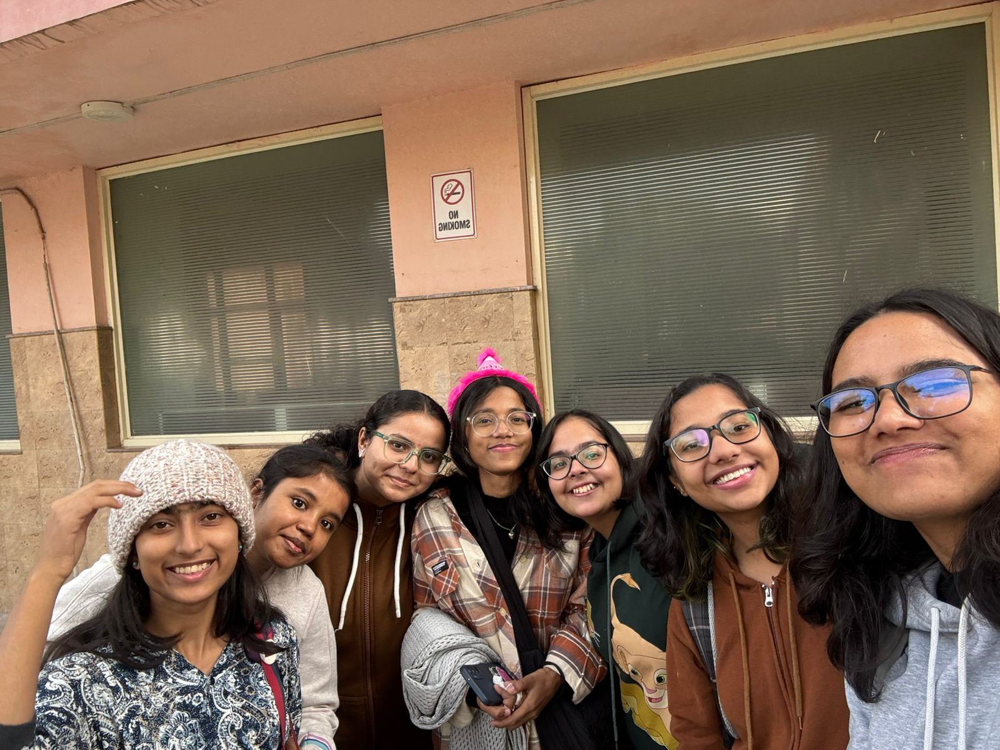
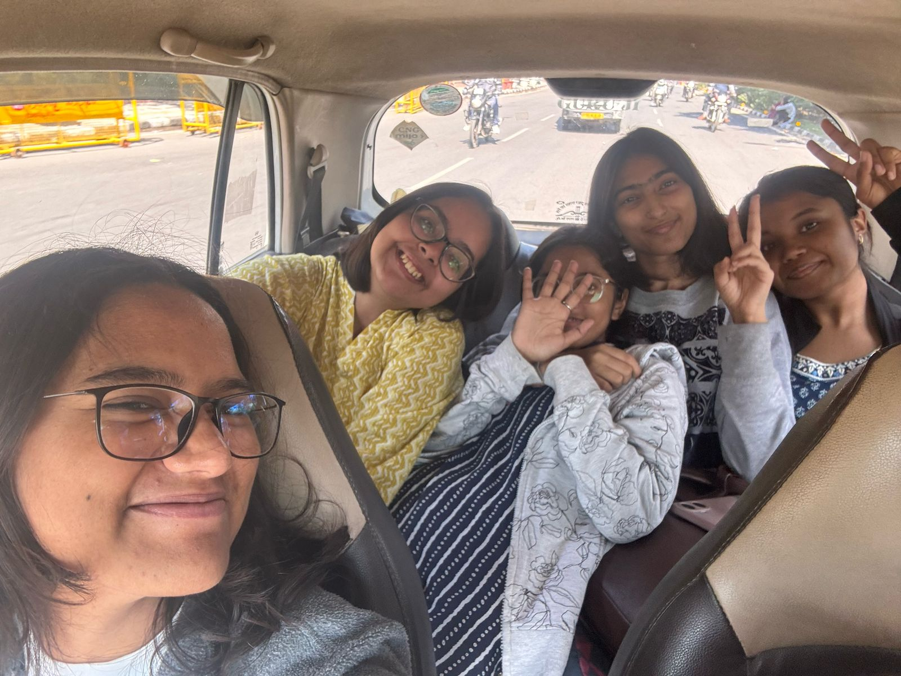
 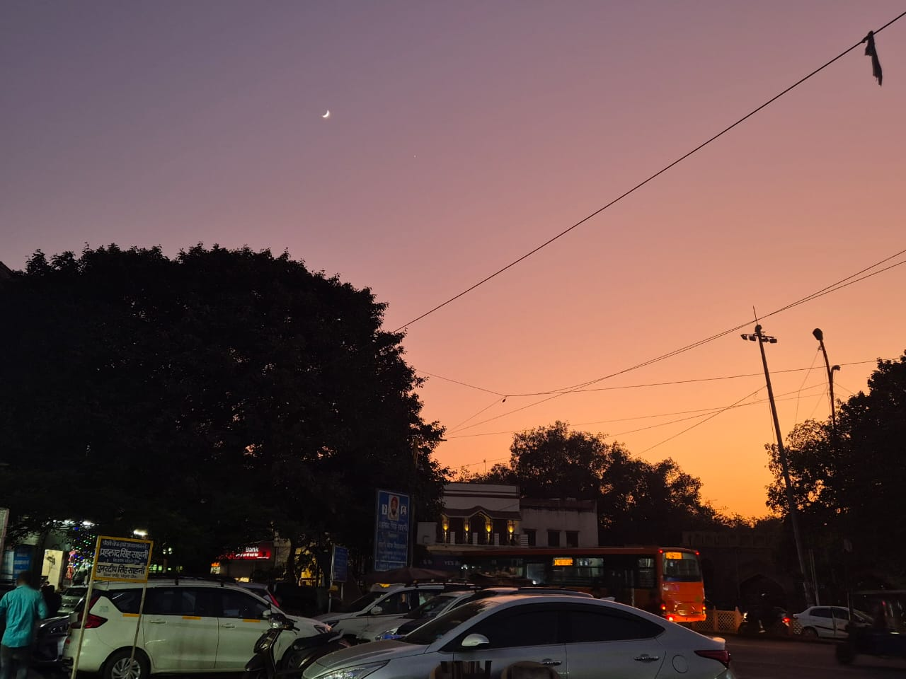
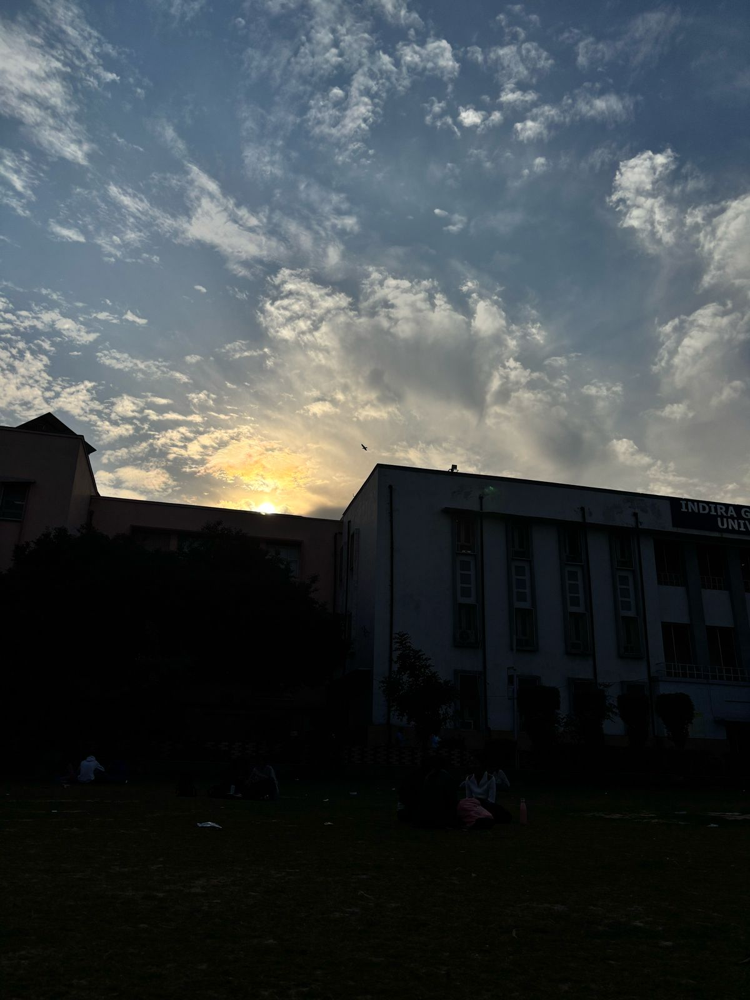
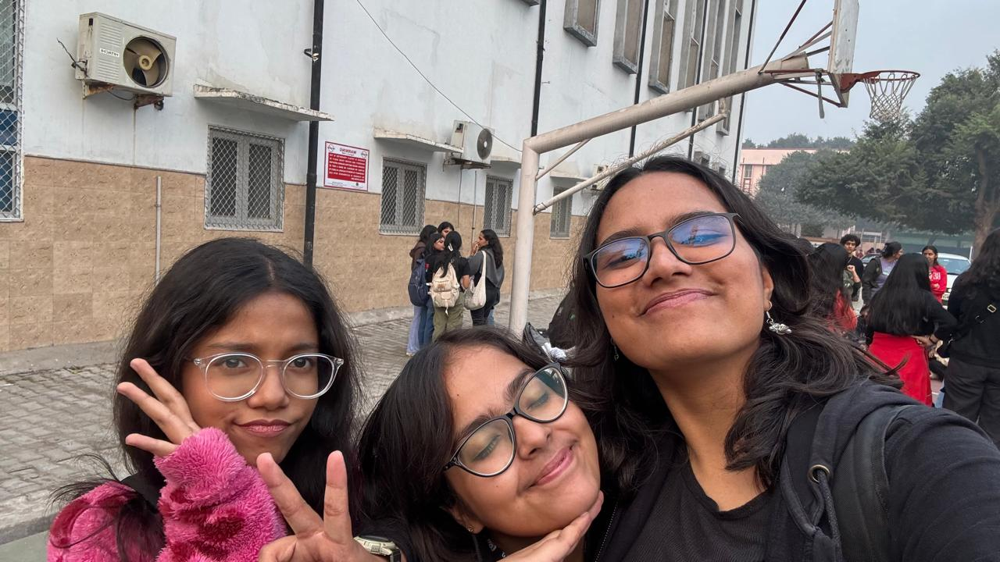
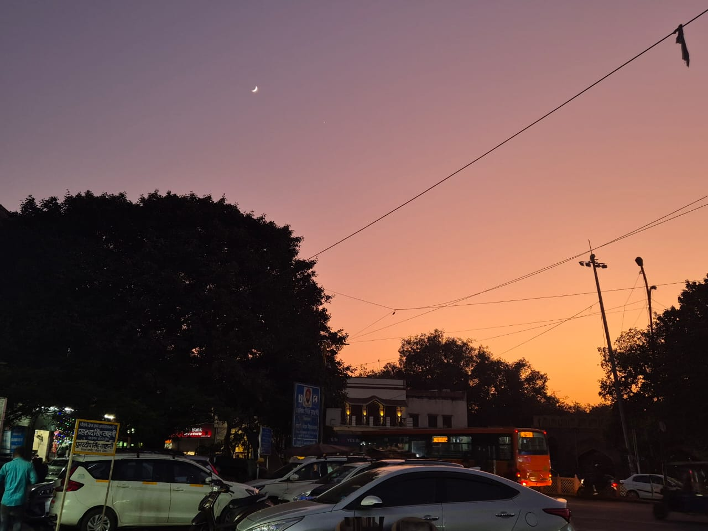
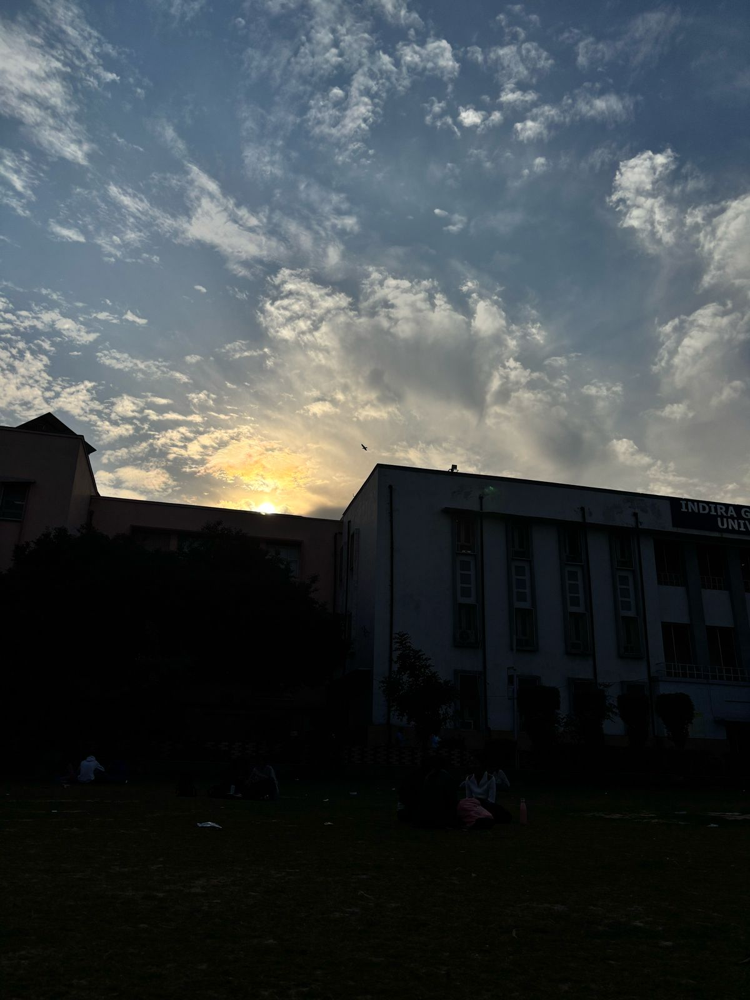
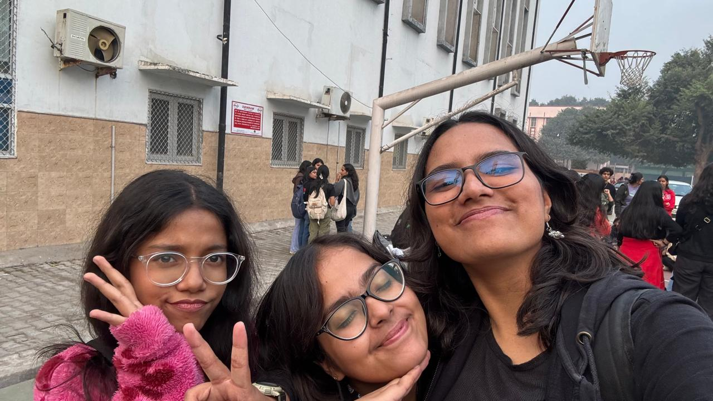
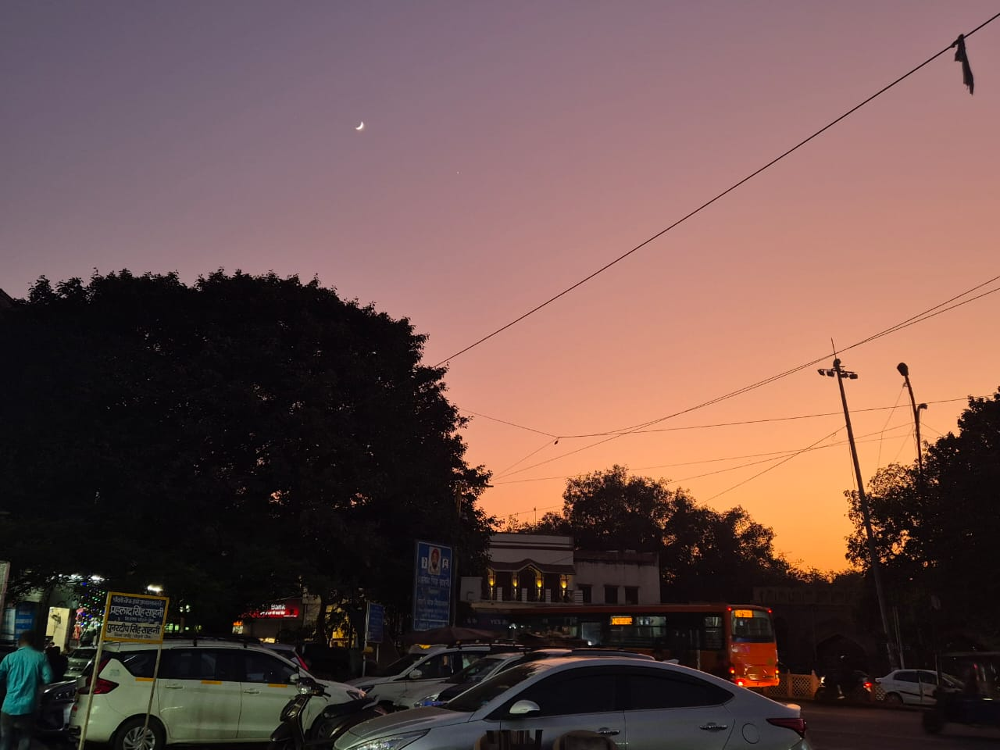
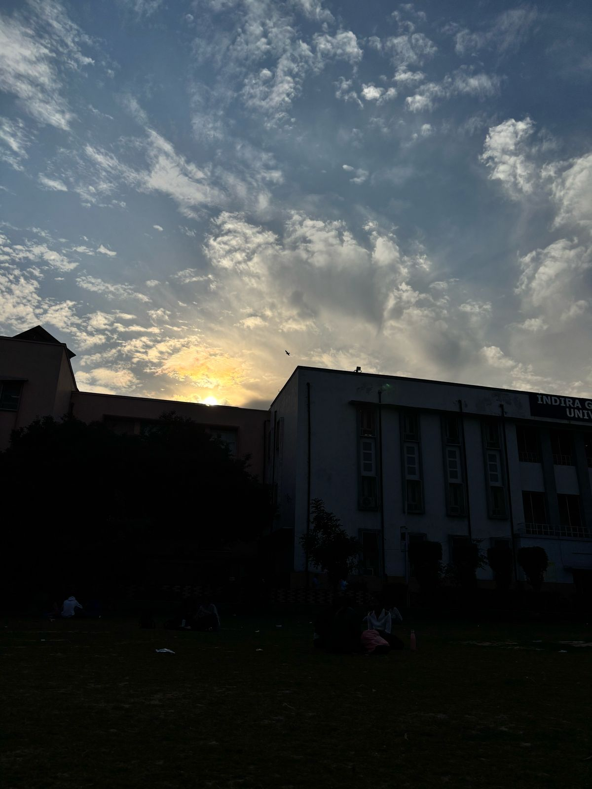
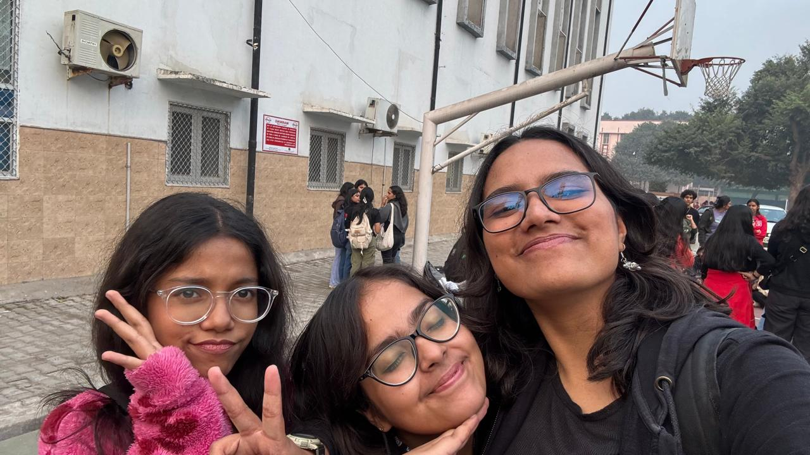
RabbikaAzmi
♡ Always Learning ♡
ping.me
you can find me on the following platforms or just send me a message:
✦ GitHub
✦ LinkedIn
not into clicking profiles? just whisper into the internet void →
azmirabbika@gmail.com
tunes.mp3
✦ a collection of songs that make me feel like im floating in a dream
✦ blurry cities • quiet thoughts • endless transit
pro tip: wear headphones for max float
snapshots.zip
some of my favorite moments captured in a few pixels, i hope you like them too:
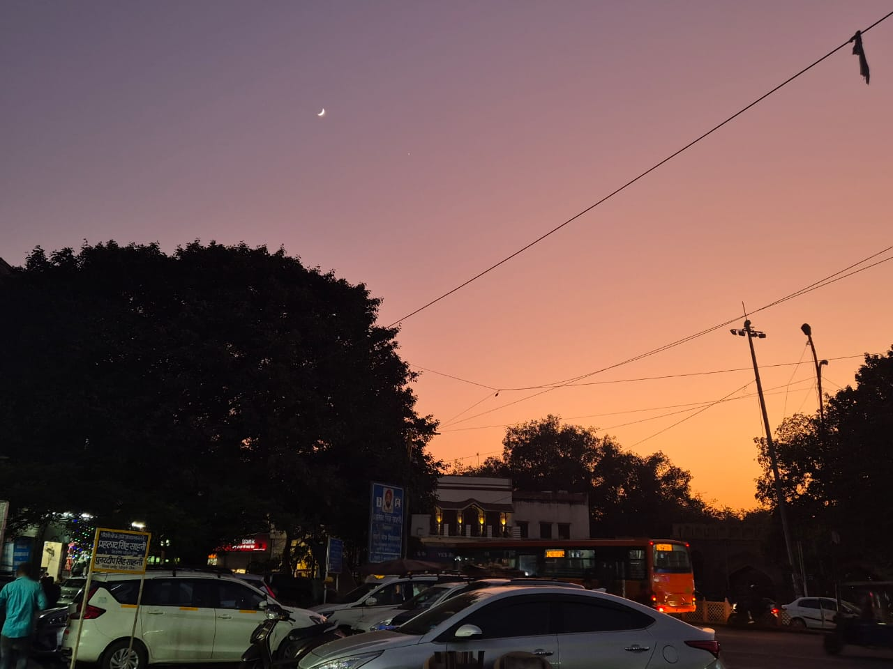
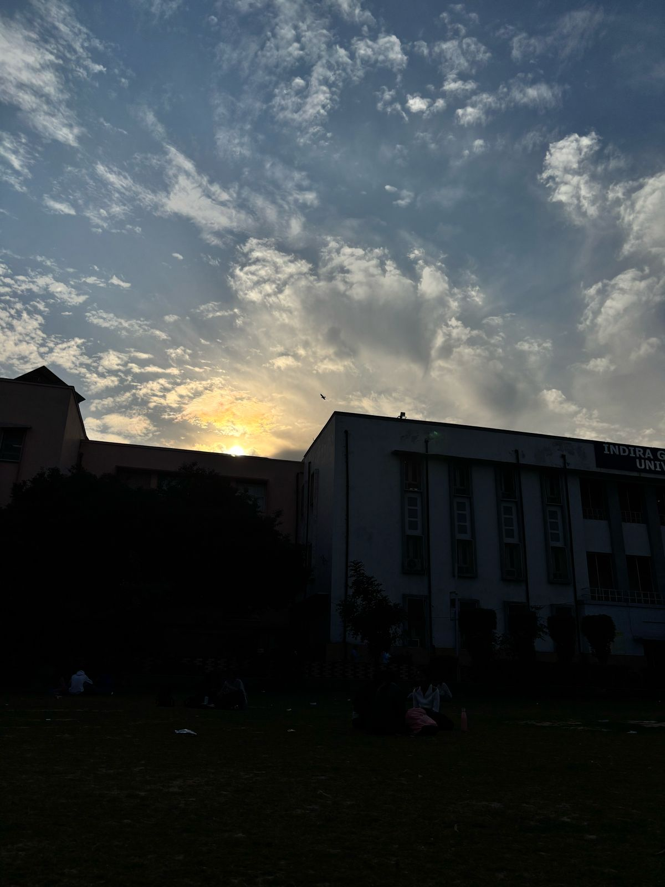
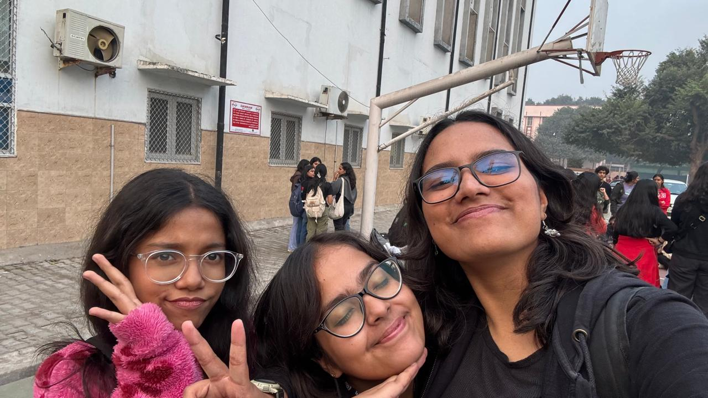
what.lives.here
i like to do a lot of things, but i never finish them, some of my them include:
me.exe
im rabbika — probably human, possibly a collection of frogs in a trench coat. i make things. break things and
probably think too much. sometimes i remember to sleep. mostly i hit ctrl+s and hope for the best.
currently im studying b.tech in information technology at indira gandhi delhi technical university for women (igdtuw),
yes, its a mouthful — but i type fast.
welcome
floatfolio is a barely stable OS inspired prototype built to debug the eternal mystery: "who is Rabbika?"